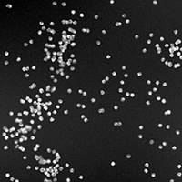

Broad Bioimage Benchmark Collection
Annotated biological image sets for testing and validation
Synthetic cells
Accession number BBBC004 · Version 1
Example images
-
Image
-
Foreground
Biological application
One of the principal challenges in counting or segmenting nuclei is dealing with clustered nuclei. To help assess algorithms' performance in this regard, this synthetic image set consists of five subsets with increasing degree of clustering.
Images
Five subsets of 20 images each are provided. Each image contains 300 objects, but the objects overlap and cluster with different probabilities in the five subsets. The images were generated with the SIMCEP simulating platform for fluorescent cell population images (Lehmussola et al., IEEE T. Med. Imaging, 2007 and Lehmussola et al., P. IEEE, 2008).
| Overlap probability | Download images |
|---|---|
| 0 | BBBC004_v1_000_images.zip (13 MB) |
| 0.15 | BBBC004_v1_015_images.zip (13 MB) |
| 0.3 | BBBC004_v1_030_images.zip (13 MB) |
| 0.45 | BBBC004_v1_045_images.zip (13 MB) |
| 0.6 | BBBC004_v1_060_images.zip (13 MB) |
Ground truth C F
Each image contains exactly 300 objects; this is the ground truth for counting.
Ground truth for foreground/background segmentation are available as binary images:
| Overlap probability | Download foreground |
|---|---|
| 0 | BBBC004_v1_000_foreground.zip (469 kB) |
| 0.15 | BBBC004_v1_015_foreground.zip (440 kB) |
| 0.3 | BBBC004_v1_030_foreground.zip (433 kB) |
| 0.45 | BBBC004_v1_045_foreground.zip (421 kB) |
| 0.6 | BBBC004_v1_060_foreground.zip (401 kB) |
See the TUT Benchmark Set of Synthetic Images for additional materials and examples of usage.
Published results using this image set
None.
Recommended citation
"We used image set BBBC004v1 [Ruusuvuori et al., in Proc. of the 16th European Signal Processing Conference (EUSIPCO-2008), 2008] from the Broad Bioimage Benchmark Collection [Ljosa et al., Nature Methods, 2012]."
Copyright
 The Synthetic 1 images
are licensed under a Creative Commons Attribution-NonCommercial-ShareAlike 3.0 Unported License by Pekka Ruusuvuori.
The Synthetic 1 images
are licensed under a Creative Commons Attribution-NonCommercial-ShareAlike 3.0 Unported License by Pekka Ruusuvuori.